先决条件 - 功能依赖
阿姆斯特朗公理这一术语指的是威廉·W·阿姆斯特朗（William W. Armstrong）引入的声音和完整的推理规则或公理集，用于检验功能依赖的逻辑含义。 如果F是一组函数依赖，那么F的闭包，表示为 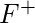 ，是F.逻辑上隐含的所有功能依赖关系的集合.Armstrong的Axioms是一组规则，当重复应用时，会生成函数依赖关系。
公理 -
- 反身性公理 -如果 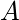 是一组属性和 是的子集 ， 然后 持有 。 如果 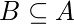 然后 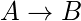 这家酒店属于微不足道的财产。
- 扩充的公理 -如果 持有和 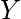 是属性集，然后 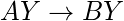 也持有。 这是在依赖项中添加属性，不会更改基本依赖项。 如果 ， 然后 任何 。
- 传递性公理 -与代数中的传递规则相同，如果 持有和 等等 也持有。 被称为 在功能上决定 。 如果 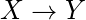 和 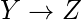 ， 然后 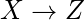
次要规则 -
这些规则可以从上述公理中得出。
- 联盟 -如果 持有和 等等 成立。 如果 和 然后 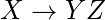
- 作文 -如果 和 等等 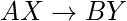 成立。
- 分解 -如果 等一下 和 保持。 如果 然后 和
- 伪传递性 -如果 持有和 等等 成立。 如果 和 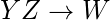 然后 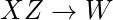 。
为什么武器公理指的是声音和完全？
通过声音，我们的意思是给定在关系模式R上指定的一组函数依赖关系F，我们可以通过使用amrmstrong公理的原语规则从F推断的任何依赖关系在R的每个关系状态r中保持满足F中的依赖关系。 。
完成后，我们的意思是重复使用强大公理的主要规则来推断依赖关系直到不再推断出依赖关系，从而导致可以从F推断的所有可能依赖关系的完整集合。
参考文献 -
阿姆斯特朗的公理 - 维基百科
http://tinman.cs.gsu.edu